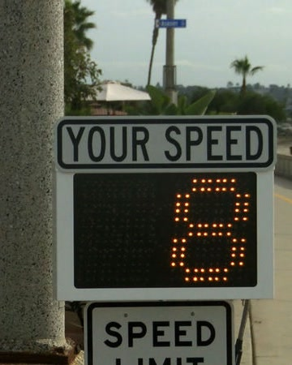

Bob's Feet: More Than You Wanted To Know
Published Last edited
Dogs Out #
I started running barefoot in 2019. I read Born To Run and became convinced that running without shoes was both possible and better for you.
The basic argument: your feet are full of muscles, tendons, and bones (26 per foot!) optimized for absorbing the impact of a footfall and rebounding your body back into the air. Nikes cushion your landing, allowing you to run with poor form and not feel a painful jolt down your heel. If you take them off, your form will change, and you will not miss the shoes.
My form has changed. When I run with others my height, I take about as many steps at the same speed. I bounce along on the balls of my feet, my heels glancing off the ground only when I am very tired at the end of a long run.
I feel much more athletic thanks to barefoot running. My feet are broad and muscular, making yoga balance poses effortless. My ankles are flexible; I couldn’t tell you how many times I stepped in divots that would have previously twisted my ankle and had no issues.[1] When I run barefoot I am gliding, always lightly in contact with the ground. I am hyper aware of my body’s relationship to the earth and the nature of my footfalls. When I run shod my feet pound the ground sharply at each step to find solid feedback through my shoes.
Ew Gross #
I will run barefoot anywhere. I have done it routinely in San Francisco, New York, London, Amsterdam, forests, beaches, mountains, snow, mud, the Tenderloin. Snow is particularly fun! I tried this expecting it to be difficult, but it turns out my foot circulation is so strong that I barely notice the cold. (I have done a lot of cold exposure and Wim Hof breathwork, which helps.) Humans did this for millennia. It doesn’t make me sick. I don’t feel dirty. I wash my feet when I get home.
I have never seen a loose needle on the ground. I don’t understand why people are so concerned about this, and where they are seeing all these needles. I almost never step on anything without realizing it; you naturally watch your step more closely when barefoot. Shards of glass smaller than a peppercorn can’t get through my calluses anyway.
My feet are never the pale white that yours are. Even when sparkling clean, they are the orange hue of a calloused knuckle pad, because the entire sole of my foot is a callus.
The Virtue of Being Stared At #
My barometer of a city’s openness and character is whether I get curiosity or scorn on my runs.
In New York street vendors have heckled me for blocks, shouting about how dirty the sidewalk is. Once while doing yoga in the park in Williamsburg I started playing with a dog; the owner quickly told me I looked crazy and took him away. Chelsea Betches on the West Side Highway make the same face at me that I imagine Regina George would make if I wore trackpants on Monday.
In Orange County, I got high fives while sprinting past the bike speed limit sign that measures your speed.

A sign like this one.
In San Francisco, walkers see me, double take, run to catch up, and ask a couple questions while jogging alongside. This very morning I got cheers from four women in a doctor’s waiting room as I jogged past barefoot and shirtless in the pouring rain.
This video is from my NYC days, but you get the idea. The original on Instagram
Vanity #
I am ashamed to admit that my barefoot habit started in part because of vanity. My sister told me I would look like a loser in toe shoes, and her life would be much easier if I went fully barefoot instead. At least that would be somewhat impressive.
I still enjoy the looks of shock I get on my runs, but I would go barefoot if I didn’t get them. In college I used to especially enjoy the gasps from pedestrians when I footbraked barefoot going down a hill on my longboard.
Notes #
Shoes make twisted ankles much more likely because their thickness creates a lever, increasing torque. Imagine you had six inch platform heels on and stepped sideways; your ankle would twist a lot. The same is true of one inch basketball shoes, just in miniature. I suspect this is why twisted ankles are so common in basketball, and why basketball shoes have high ankle support to compensate. ↩︎